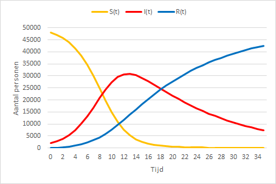

SIR model
SIR model
wiskunde
Uitleg SIR model voor infectieziekten
Inleiding
Het SIR model is een wiskundig model dat beschrijft en voorspelt hoe snel de verspreiding van een infectieziekte verloopt door een groep mensen. Voor de eenvoudigste vorm van zo’n model zijn slechts drie getallen nodig.
Een getal dat aangeeft hoe lang duurt het voordat een besmettelijk persoon iemand anders besmet heeft. Een typische grieppatiënt besmet bijvoorbeeld na één of twee dagen alweer de volgende, bij corona wordt dat geschat op zes dagen, maar mogelijk korter.
Een getal dat aangeeft hoe lang deze besmettelijke fase duurt.
Een getal dat aangeeft op hoeveel mensen één besmet persoon het virus gemiddeld overdraagt, ervan uitgaande dat iedereen in de populatie het nog kan krijgen. Dat is uit te drukken met het basis reproductiegetal \(\mathrm{R_0}\).
Het SIR model is een van de eenvoudigste modellen om de verspreiding van een virus door een populatie te verklaren.
Model
Het model is een Ziektecompartimentenmodel dat veronderstelt dat elk persoon in de populatie tot een van de volgende groepen (compartimenten) behoort:
- S(usceptible (Vatbaar): een persoon die de ziekte nog niet heeft gehad, niet immuun is voor de ziekte en dus besmet kan worden bij contact met een geïnfecteerd persoon.
- I(nfectious) (Besmettelijk): een persoon die momenteel door de ziekte getroffen is en de ziekte op anderen kan overdragen.
- R(ecovered) (Hersteld): een eerder besmette persoon die niet meer door de ziekte wordt aangetast en de ziekte niet meer kan overdragen.
Uitgangspunten bij het model:
- Op tijdstip nul is iedereen vatbaar en zit dus in groep S, behalve die personen die op dit tijdstip al besmettelijk zijn.
- Iedere persoon in groep S loopt de kans om besmet te raken en in groep I terecht te komen.
- Iedere persoon in groep I, dus iedere geïnfecteerd persoon, herstelt na zekere tijd en gaat over naar groep R.
- Iedere persoon die in groep R terecht komt is immuun en kan geen anderen meer besmetten. Er kan dus geen herinfectie plaatsvinden.
Wiskundig model
Tom Rock, een wiskundige van de Universiteit Oxford, heeft in een youtube video (Rock 2020) een zeer goede uitleg van het mathematisch model gegeven.
In het wiskundige model worden met \(S(t)\), \(I(t)\) en \(R(t)\) het aantal personen in elke groep op tijdstip \(t\) aangegeven. Verder wordt aangenomen dat de populatie bestaat uit een constant aantal van \(N\) personen welke constant blijft. Steeds geldt dus
\(S(t) + I(t) + R(t) = N\)
Met \(S' = \frac{dS}{dt}\), \(I'= \frac{dI}{dt}\) en \(R'= \frac{dR}{dt}\) wordt de snelheid aangegeven waarmee \(S\), \(I\) en \(R\) veranderen. Verder wordt een dag als tijdseenheid genomen.
De processen die plaatsvinden zijn besmet raken en herstellen.
Herstellen
Door het herstelproces gaan personen over van groep I naar groep R. Dagelijks herstelt een fractie van het aantal personen. Deze fractie wordt aangegeven met de herstelcoëfficiënt \(\gamma\).
Opmerking
Bij mazelen is \(\gamma \approx \frac{1}{14}\).
De verandering in de R-groep kan dan weergeven worden met de volgende differentiaalvergelijking:
\(R' = \gamma I\)
Besmet raken
Het infecteren van een persoon onstaat door contact tussen een S-persoon en een I-persoon. Bij zo’n contact is er een bepaalde kans dat de S-persoon geïnfecteerd wordt. \(S'\) is dus evenredig met het aantal vatbare personen \(S\) en ook evenredig met het aantal geïnfecteerde personen \(I\). En \(S\) neemt af in de tijd, dus \(S'\) is negatief.
De verandering in de S-groep kan dan weergegeven worden met de volgende differentiaalvergelijking:
\(S' = -\beta SI\)
Hierbij is \(\beta\) de overdrachtscoefficient, welke de kans op besmetting aangeeft.
De verandering in de I-groep bestaat uit twee componenten: de toename vanuit S-groep en de afname door overgang naar de I-groep. De verandering in deze groep wordt dan weergegeven met de volgende differentiaalvergelijking:
\(I'= \beta SI - \gamma I\)
Samenvatting
Het model bestaat nu uit drie differentiaalvergelijkingen met twee parameters (\(\beta\) en \(\gamma\)).
\[\begin{eqnarray*} S' &=& - \beta SI \\ I' &=& \beta SI - \gamma I \\ R' &=& \gamma I \end{eqnarray*}\]Numeriek voorbeeld
Als voorbeeld een groep van 50.000 personen, waarvan er 2000 besmet zijn op tijdstip 0, er nog niemand hersteld is, \(\beta = 0,00001\) en \(\gamma = 0,0714 \approx \frac{1}{14}\).
- \(S(0) = 48000\)
- \(I(0) = 2000\)
- \(R(0) = 0\)
- \(\beta = 0,00001\) en \(\gamma = 0,0714 \approx \frac{1}{14}\)
Vandaag (t=0)
- \(S(0) = 48000\)
- \(I(0) = 2000\)
- \(R(0) = 0\)
- \(\beta = 0,00001\) en \(\gamma = 0,0714\)
en veranderingen:
- \(S'(0) = - 0,00001*48000*2000 = -960\)
- \(I'(0) = 0,00001*48000*2000 - 0,0714*2000 = 817,2\)
- \(R'(0) = 0,0714*2000 = 142,8\)
Morgen (t=1)
- \(S(1) = S(0) + S'(0)*1dag = 48000 - 960 = 47040\)
- \(I(1) = I(0) + I'(0)*1dag = 2000 + 817,2 = 2817,2\)
- \(R(1) = R(0) + R'(0)*1dag = 0 + 142,8 = 142,8\)
en veranderingen:
- \(S'(1) = - 0,00001*47040*2817,2 = -1325,2\)
- \(I'(1) = 0,00001*47040*2817,2 - 0,0714*2000 = 1124,1\)
- \(R'(1) = 0,0714*2817,2 = 201,1\)
Overmorgen (t=2)
- \(S(2) = S(1) + S'(1)*1dag = 47040 - 1325,2 = 45714,8\)
- \(I(2) = I(1) + I'(1)*1dag = 2817,2 + 1124,1 = 3941,3\)
- \(R(2) = R(1) + R'(1)*1dag = 142,8 + 201,1 = 343,9\)
enz.
Grafisch ziet dit er als volgt uit.

Tip
Fracties
Je kunt ook met fracties van de totale populatie werken. Sommige berekeningen werken dan iets gemakkelijker.
\(s(t) = \frac{S(t)}{N}\), \(i(t) = \frac{I(t)}{N}\) en \(r(t) = \frac{R(t)}{N}\)
In dat geval is \(s(t) + i(t) + r(t) = 1\)
Verspreiding van de ziekte
Je wilt natuurlijk het liefst dat de verspreiding afneemt. Daarvoor is de ontwikkeling van het aantal geïnfecteerden van belang.
\(I' = \beta SI - \gamma I = (\beta S - \gamma)I\)
Je wilt dat de epidemie afneemt, dus dat \(I'\) negatief wordt. Hiervoor moet de factor \((\beta S - \gamma)\) negatief zijn.
\(\beta S - \gamma < 0 \Rightarrow \beta S < \gamma \Rightarrow \frac{\beta S}{\gamma} < 1\)
De begincondities (voor \(t=0\)) zijn:
- \(S = S_0\)
- \(I = I_0\)
- \(R = 0\)
\(S\) neemt altijd af, dus voor andere waarden van \(t\) geldt altijd \(S < S_0\)
Basis reproductiegetal \(R_0\)
\(R_0 = \frac{\beta S_0}{\gamma}\) en met \(S_0 \approx N\) wordt dit \(R_0 \approx \frac{\beta}{\gamma}N\)
\(R_0\) (uitspreken als “R naught”) is het gemiddeld aantal besmettingen dat een geïnfecteerd persoon veroorzaakt. Wetenschappers van het Imperial College London schatten de waarde ergens tussen 1,5 en 3,5.
Een eerste schatting van \(R_0\) kwam neer op het gebied 2,24-3,58. Een onderzoek een maand later publiceerde een bereik van 2,49-2,63.
Voor het afnemen van de epidemie is dan nodig: \(R_0 < 1\)
Mogelijkheden om dit voor elkaar te krijgen:
- Maak \(\beta\) kleiner. Dat kan via: was handen, nies in elleboog, sluit scholen, …
- Maak \(S_0\) kleiner. De groep die vatbaar is zou je kleiner kunnen maken door personen te vaccineren.
- Maak \(\gamma\) groter. Dit is zelden effectief bij een epidemie. Soms zijn er mogelijkheden, bijv. via antibiotica.
- Wacht af, doe niets. De epidemie stopt op een gegeven moment omdat de S-groep klein geworden is.
Maximum aantal geïnfecteerden
\(\frac{dI}{dS} = \frac{I'}{S'} = \frac{\beta SI - \gamma I}{-\beta SI} = -1 + \frac{\gamma}{\beta S}\)
Vaak wordt ook gebruikt contact ratio \(q = \frac{\beta}{\gamma}\). Substitueren geeft dan
\(\frac{dI}{dS} = -1 + \frac{1}{qS}\) welke direct geïntegreerd kan worden en geeft
\(I + S - \frac{1}{q}ln(S) = I_0 + S_0 - \frac{1}{q}ln(S_0)\)
Voor het bepalen van het maximum moet gelden dat de afgeleide \(\frac{dI}{dS} = 0\), dus \(-1 + \frac{1}{qS} = 0\), ofwel \(S = \frac{1}{q}\).
Substitueren in de vergelijking geeft dan
\(I_{max} = I_0 + S_0 - \frac{1}{q}(1 + ln(q S_0))\).
Hierbij is \(I_0 + S_0\) de gehele populatie \(N\).
Je kunt dit ook zien als dat \(I_{max}\) gelijk is aan de gehele populatie verminderd met een waarde die van een functie van \(q\) afhangt.
\(I_{max} = N - f(q)\)
\(q\) is de contact ratio, de fractie van de populatie die in contact komt met een geinfecteerde. Op dit moment is voor de COVID-19 de waarde van \(q\) erg groot, dus \(f(q)\) klein, dus het maximum aantal geinfecteerden weer groot. En dat is slecht nieuws.
Referenties
Churches, Tim. 2020a. ‘COVID-19 epidemiology with R’. https://rviews.rstudio.com/2020/03/05/covid-19-epidemiology-with-r/.
———. 2020b. ‘Simulating COVID-19 interventions with R’. https://rviews.rstudio.com/2020/03/19/simulating-covid-19-interventions-with-r/.
Eisenberg, Joseph. 2020. ‘How Scientists Quantify the Intensity of an Outbreak Like COVID-19’. https://labblog.uofmhealth.org/rounds/how-scientists-quantify-intensity-of-an-outbreak-like-covid-19.
Höhle, Michael. 2020. ‘Flatten the COVID-19 curve’. https://staff.math.su.se/hoehle/blog/2020/03/16/flatteningthecurve.html.
Lanese, Nicoletta. 2020. ‘How far could the new coronavirus spread?’ https://www.livescience.com/how-far-will-coronavirus-spread.html.
‘R - Fitting SIR Model with 2019-nCoV data doesn’t conververge’. 2020. https://stats.stackexchange.com/questions/446712/fitting-sir-model-with-2019-ncov-data-doesnt-conververge.
Rock, Tom. 2020. ‘Oxford Mathematician explains SIR Disease Model for COVID-19 (Coronavirus).’ https://www.youtube.com/watch?v=NKMHhm2Zbkw.